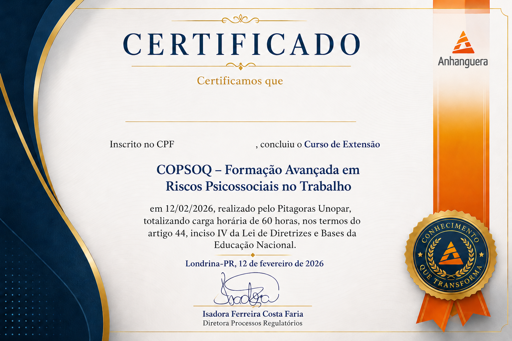

Transforme dados psicossociais em decisões estratégicas de saúde nas organizações.
Domine o COPSOQ, o questionário internacional de riscos psicossociais mais adotado no mundo, e aprenda a realizar diagnósticos alinhados à NR-01 para empresas, consultores e profissionais de RH.
- Metodologia validada internacionalmente
- Certificado de Extensão Universitária reconhecido pelo MEC
- Turmas presenciais e online ao vivo
- Aplicação alinhada à NR-01 e aos riscos psicossociais
COPSOQ III — Copenhagen Psychosocial Questionnaire
O COPSOQ (Copenhagen Psychosocial Questionnaire) é o instrumento de referência mundial para avaliação de fatores de risco psicossocial no trabalho. Desenvolvido na Dinamarca e validado em mais de 30 países, ele permite identificar, medir e monitorar riscos que afetam o bem-estar, a saúde mental e a produtividade dos colaboradores.
Neste treinamento, você aprenderá a selecionar a versão adequada para cada contexto organizacional, aplicar o questionário, interpretar os resultados e elaborar relatórios de devolutiva com recomendações práticas — alinhando o processo à NR-01 (GRO/PGR) e à Resolução CFP 030/2024.
Três versões do instrumento
23
itens — Versão Curta
76
itens — Versão Média
141
itens — Versão Longa
Cada versão avalia dimensões como exigências do trabalho, organização e conteúdo, relações interpessoais, interface trabalho-família, valores laborais e saúde e bem-estar.
Para quem é este curso?
Profissionais que atuam ou querem atuar com saúde mental, riscos psicossociais e gestão de pessoas.
Psicólogos Organizacionais
Que atuam em empresas, clínicas ou de forma independente e precisam de ferramentas validadas para diagnóstico organizacional.
Profissionais de RH
BPs, gestores de saúde ocupacional e especialistas em People Analytics que desejam estruturar o processo de GRO na empresa.
Consultores e Coaches
Que oferecem ou querem oferecer serviços de diagnóstico organizacional e prevenção de riscos psicossociais para empresas clientes.
Profissionais de Saúde
Médicos do trabalho, enfermeiros, técnicos em segurança do trabalho e profissionais do SESMT que precisam integrar o COPSOQ ao PGR.
Números do COPSOQ no CVAT Brasil
+30
países com versão validada do COPSOQ
3
versões do questionário (curta, média e longa)
100%
alinhado à NR-01 e Resolução CFP 030/2024
Benefícios da formação
Fundamentos do COPSOQ III
Compreenda a origem, o embasamento teórico e a estrutura do questionário, incluindo as dimensões psicossociais avaliadas.
Aplicação e coleta de dados
Domine o processo de aplicação online e presencial, controle de qualidade dos dados e boas práticas éticas no processo.
Análise e interpretação dos resultados
Aprenda a calcular escores, interpretar os perfis de risco e comparar os dados com benchmarks internacionais e nacionais.
Elaboração de relatórios de devolutiva
Estruture relatórios claros e executivos para diferentes públicos — diretoria, RH e equipes — com recomendações acionáveis.
Integração com NR-01 e PGR
Entenda como o COPSOQ se encaixa no Gerenciamento de Riscos Ocupacionais e nas exigências legais vigentes para riscos psicossociais.
Condução de reuniões de devolutiva
Aprenda técnicas para apresentar resultados sensíveis para líderes e equipes, promovendo diálogo e engajamento nas soluções.
O que você vai estudar
Três módulos progressivos — do entendimento do instrumento à aplicação profissional completa em contextos reais.
- O que são fatores de risco psicossocial no trabalho e por que avaliar
- Histórico e desenvolvimento do COPSOQ — da versão I ao COPSOQ III
- Estrutura do questionário: dimensões, subescalas e itens das três versões
- Validação psicométrica e confiabilidade do instrumento
- Contexto legal: NR-01 (GRO/PGR) e Resolução CFP 030/2024
- Escolhendo a versão certa: critérios de seleção por contexto organizacional
- Planejamento da pesquisa: comunicação, engajamento e ética
- Fluxo de aplicação: convite, prazo, acompanhamento de adesão e encerramento
- Controle de qualidade e tratamento de dados faltantes
- Cálculo de escores e construção das escalas
- Interpretação por dimensão: o que cada escore significa na prática
- Segmentação por área, cargo e turno — análise diferenciada dos resultados
- Uso da plataforma C-VAT para digitalização e geração de relatórios
- Estrutura do relatório executivo: o que incluir e como priorizar
- Como comunicar riscos críticos sem gerar pânico ou resistência
- Facilitação de reuniões de devolutiva para lideranças e equipes
- Elaboração do Plano de Ação para riscos psicossociais identificados
- Integração do diagnóstico COPSOQ com o PGR e laudos médicos-ocupacionais
- Estudo de caso supervisionado: aplicação completa em empresa-modelo
Certificação do curso
Ao concluir o treinamento, você recebe documentação formal de participação e habilitação para uso do instrumento.
Certificado CVAT Brasil
Certificado digital de conclusão emitido pelo CVAT Brasil, com carga horária, conteúdo e dados do participante. Válido como comprovação de desenvolvimento profissional.
Habilitação para uso do instrumento
Ao concluir o curso, você fica habilitado a aplicar e interpretar o COPSOQ III dentro de contextos organizacionais, conforme as diretrizes éticas do CFP e da rede COPSOQ.
Acesso ao suporte pós-formação
Após a conclusão, você continua com acesso ao canal de suporte CVAT Brasil para tirar dúvidas nas primeiras aplicações profissionais do instrumento.
Material de apoio permanente
Acesso permanente ao material didático do curso: slides, guia de interpretação, planilha de análise e modelo de relatório executivo em PDF.

Quem vai te ensinar
Clóvis Soler
Membro da COPSOQ International Network
Clóvis Soler é Professor Doutor em Administração de Empresas e pesquisador nas áreas de Cultura Organizacional e Riscos Psicossociais no Trabalho. Fundador e diretor do CVAT Brasil, é responsável pela adaptação e desenvolvimento do CVAT para o contexto brasileiro, atuando há mais de 15 anos na formação de líderes e consultores organizacionais.
Coautor do Framework GESTOR NR-01, dedica-se à integração entre valores pessoais, cultura organizacional e gestão de riscos psicossociais, com foco em performance e bem-estar nas empresas.
Perguntas frequentes
Pronto para dominar o COPSOQ III e
ampliar sua atuação profissional?
Fale com nossos especialistas e receba uma proposta personalizada para você ou para a sua equipe.
Proposta enviada em até 24h úteis · Sem compromisso